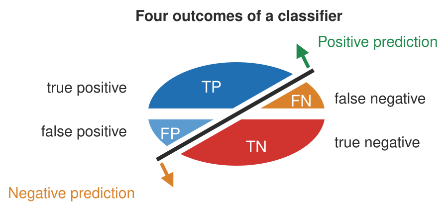

5.8. evaluation#
5.8.1. losses#
define a loss function \(\mathcal{L}\)
0-1 loss: \(\vert C-f(X)\vert\) - hard to minimize (combinatorial)
\(L_2\) loss: \([C-f(X)]^2\)
risk = \(E_{(x,y)\sim D}[\mathcal L(f(X), y) ]\)
optimal classifiers
Bayes classifier minimizes 0-1 loss: \(\hat{f}(X)=C_i\) if \(P(C_i\vert X)=\max_f P(f\vert X)\)
KNN minimizes \(L_2\) loss: \(\hat{f}(X)=E(Y\vert X)\)
classification cost functions
misclassification error - not differentiable
Gini index: \(\sum_{i \neq j} p_i q_j\)
cross-entropy: $\(-\sum_x p(x)\: \log \: \hat p(x) \)\(, where \)p(x)\( are usually labels and \)\hat p(x)$ are softmax outputs
only penalizes target class (others penalized implicitly because of softmax)
for binary, \(- p \log \hat p - (1-p) \log (1-\hat p)\)
5.8.2. measures#
goodness of fit - how well does the learned distribution represent the real distribution?
classification of a test dataset produces four outcomes – true positive, false positive, true negative, and false negative

accuracy-based
accuracy = (TP + TN) / (P + N)
correct classifications / total number of test cases
balanced accuracy = 1/2 (TP / P + TN / N)
denominator is total pos/neg
recall = sensitivity = true-positive rate = TP / P = TP / (TP + FN)
what fraction of the real positives do we return?
specificity = true negative rate = TN / N = TN / (TN + FP)
what fraction of the real negatives do we return?
false positive rate = FP / N \(= 1 - \text{specificity}\)
what fraction of the predicted negatives are wrong?
fraction is total predictions
precision = positive predictive value = TP / (TP + FP)
what fraction of the prediction positives are true positives?
negative predictive value = TN / (FN + TN)
what fraction of predicted negatives are true negatives?
F-score is harmonic mean of precision and recall: 2 * (prec * rec) / (prec + rec)
NRI (controversial): compares 2 model’s binary predictions
curves - easiest is often to just plot TP vs TN or FP vs FN
roc curve: true-positive rate (recall) vs. false-positive rate
perfect is recall = 1, false positive rate = 0
precision-recall curve
summarizing curves
AUC: area under (either one) of these curves - usually roc
concordance = inter-rate reliability
exact concordance - percentage where cohort is in total agreement (i.e. accuracy)
Cohen’s kappa coefficient - 0 is uncorrelated, 1 is perfect, negative is inverse correlation
\(\kappa \equiv \frac{\cblue{p_{o}}-\corange{p_{e}}}{1-\corange{p_{e}}}=1-\frac{1-\cblue{p_{o}}}{1-\corange{p_{e}}}\)
\(\cblue{p_o}\) is relative observed agreement and \(\corange{p_e}\) is chance expected agreement
weighted kappa coefficient - used when ordering for predicted labels (being off by more is given bigger weight)
5.8.3. comparing two things#
odds: \(p : \text{not }p\)
odds ratio is a ratio of odds
5.8.4. cv#
cross validation - don’t have enough data for a test set
properties
not good when n < complexity of predictor
because summands are correlated
assume data units are exchangeable
can sometimes use this to pick k for k-means
data is reused
types
k-fold - split data into N pieces
N-1 pieces for fit model, 1 for test
cycle through all N cases
average the values we get for testing
leave one out (LOOCV)
train on all the data and only test on one
then cycle through everything
random split - shuffle and repeat
one-way CV = prequential analysis - keep testing on next data point, updating model
ESCV - penalize variance between folds
regularization path of a regression - plot each coeff vs. \(\lambda\)
shows when features get pushed to 0
for OLS (and maybe other linear models), can compute leave-one-out CV without training separate models
5.8.5. stability#
computational stability
randomness in the algorithm
perturbations to models
generalization stability
perturbations to data
sampling methods
bootstrap - take a sample
repeatedly sample from observed sample w/ replacement
bootstrap samples has same size as observed sample
subsampling
sample without replacement
jackknife resampling
subsample containing all but one of the points
5.8.6. other considerations#
computational cost
interpretability
model-selection criteria
adjusted \(R^2_p\) - penalty
Mallow’s \(C_p\)
\(AIC_p\)
\(BIC_p\)
PRESS
5.8.7. nlp#
BLEU (BiLingual Evaluation Understudy) is a metric for automatically evaluating machine-translated text. The BLEU score is a number between zero and one that measures the similarity of the machine-translated text to a set of high quality reference translations
ROUGE, BLEU
BERTScore, BLEURTScore
5.8.8. ranking#
mean reciprocal rank
normalized discounted cumulative gain (NCDG)
discounted cumulative gain: \(\sum_{i=1}^p \frac{\cblue{r e l_i}}{\corange{\log _2(i+1)}}\), where \(\cblue{rel_i}\) is usually binary and denominator emphasizes putting higher relevance results first
normalized CDG normalizes this by the ideal (so just putting all ones in the numerator)
sometimes, when \(rel_i \in (0, 1)\) rather than binary, people use \(2^{rel_i} - 1\) to further incentivize relevances closer to 1